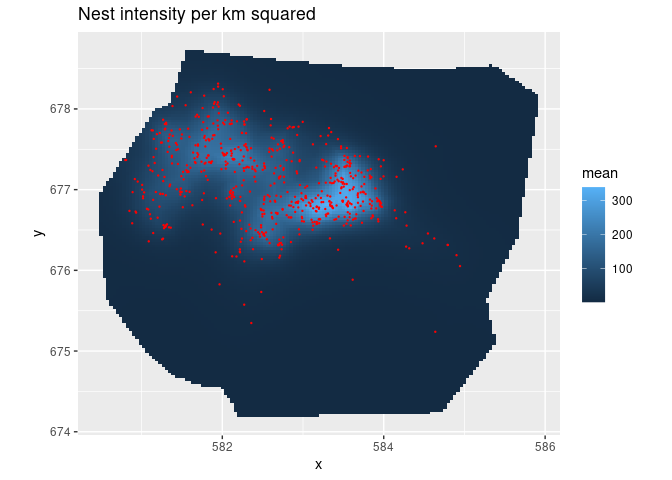

The goal of inlabru is to facilitate spatial modeling using integrated nested Laplace approximation via the R-INLA package. Additionally, implements a log Gaussian Cox process likelihood for modeling univariate and spatial point processes based on ecological survey data. See Fabian E. Bachl, Finn Lindgren, David L. Borchers, and Janine B. Illian (2019), inlabru: an R package for Bayesian spatial modelling from ecological survey data, Methods in Ecology and Evolution, British Ecological Society, 10, 760–766, doi:10.1111/2041-210X.13168, and citation("inlabru").
The inlabru.org website has links to old tutorials with code examples for versions up to 2.1.13. Updated version of these tutorials, as well as new examples, can currently be found under Articles on the https://inlabru-org.github.io/inlabru/ website.
Installation
You can install the current CRAN version of inlabru:
install.packages("inlabru")You can install the latest bugfix release of inlabru from GitHub with:
# install.packages("remotes")
remotes::install_github("inlabru-org/inlabru", ref="stable")You can install the development version of inlabru from GitHub with:
# install.packages("remotes")
remotes::install_github("inlabru-org/inlabru", ref="devel")Example
This is a basic example which shows you how fit a simple spatial Log Gaussian Cox Process (LGCP) and predicts its intensity:
# Load libraries
options("rgdal_show_exportToProj4_warnings"="none")
library(inlabru)
#> Loading required package: ggplot2
#> Loading required package: sp
library(INLA)
#> Loading required package: Matrix
#> Loading required package: parallel
#> Loading required package: foreach
#> This is INLA_20.12.10 built 2020-12-10 22:22:29 UTC.
#> - See www.r-inla.org/contact-us for how to get help.
#> - To enable PARDISO sparse library; see inla.pardiso()
#> - Save 264.3Mb of storage running 'inla.prune()'
library(ggplot2)
# Load the data
data(gorillas, package = "inlabru")
# Construct latent model components
matern <- inla.spde2.pcmatern(gorillas$mesh,
prior.sigma = c(0.1, 0.01),
prior.range = c(0.01, 0.01))
cmp <- coordinates ~ mySmooth(coordinates, model = matern) + Intercept(1)
# Fit LGCP model
fit <- lgcp(cmp,
data = gorillas$nests,
samplers = gorillas$boundary,
domain = list(coordinates = gorillas$mesh),
options = list(control.inla = list(int.strategy = "eb")))
# Predict Gorilla nest intensity
lambda <- predict(fit, pixels(gorillas$mesh), ~ exp(mySmooth + Intercept))
# Plot the result
ggplot() +
gg(lambda) +
gg(gorillas$nests, color = "red", size = 0.2) +
coord_equal() +
ggtitle("Nest intensity per km squared") If you have an R installation with PROJ6/GDAL3, and INLA >= 20.06.18, and loading old spatial objects, you may need to apply the rgdal::rebuild_CRS() method on them before they are fully usable. The gorillas object in inlabru has been updated, but not yet the other stored data sets.